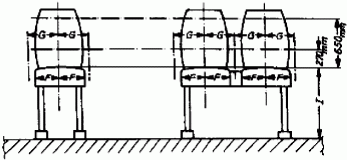
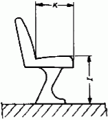
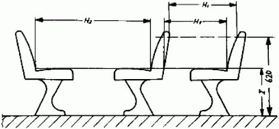
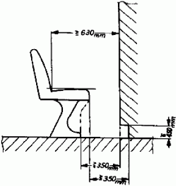
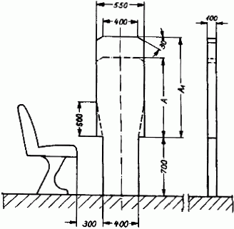
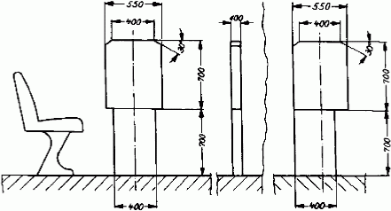

| 1 | Einteilung der Kraftomnibusse Es werden unterschieden |
|||
| 1.1 | Kraftomnibusse mit Stehplätzen | |||
| 1.1.1 | mit mehr als 16 Fahrgastplätzen | |||
| 1.1.2 | mit bis zu 16 Fahrgastplätzen | |||
| 1.2 | Kraftomnibusse ohne Stehplätze | |||
| 1.2.1 | mit mehr als 16 Fahrgastplätzen | |||
| 1.2.2 | mit bis zu 16 Fahrgastplätzen | |||
2 |
Gänge und Innenraumhöhe über Plattformen Gang ist der Bereich im Innenraum von Kraftomnibussen, der mehr als 400 mm von den Fahrgasttüren entfernt ist. Er muss den Fahrgästen den Zugang zu jedem Sitz/jeder Sitzreihe ermöglichen. Der Gang umfasst nicht den bis zu 300 mm tiefen Raum vor einem Sitz/einer Sitzreihe, der für die Füße der sitzenden Fahrgäste bestimmt ist, sowie den Raum vor der letzten Sitzreihe oder Sitzbank, der nur von denjenigen Fahrgästen benutzt wird, die diese Sitze einnehmen.
|
|
|
|
|||||||||||||||
|
|
|
|||||||||||||||
|
|
Erläuterungen: |
||||||||
|
|
|
||||||||
| Bei Gelenk-Kraftomnibussen muss die Messvorrichtung auch den Gelenkabschnitt in allen möglichen Betriebsstellungen der Fahrzeuge unbehindert passieren können. |
3 |
Fahrgastsitze |
|||||||||||||||||||||||||||||||
| 3.1 | Sitzmaße Die Abmessungen für jeden Sitzplatz müssen den in der nachfolgenden Aufstellung und in der Skizze zusammengefassten Abmessungen entsprechen. Alle Maße beziehen sich auf unbelastete Sitz- und Lehnenpolster. |
|||||||||||||||||||||||||||||||
|
|
 Einzelsitz Durchgehender Sitz (Sitzbänke für zwei oder mehr Fahrgäste) Die Rückenlehnen dürfen auch einteilig ausgeführt sein.  Tiefe des Sitzpolsters (K) Höhe des Sitzpolsters (I)
|
|||||||||||||||||||||||||||||||
| 3.2 | Freiraum | |||||||||||||||||||||||||||||||
| Um dem Fahrgast die nötige Bewegungsfreiheit zu gewährleisten, muss der Bereich über dem unbelasteten Sitzpolster eine freie Höhe von 900 mm aufweisen. Außerdem muss der Abstand gemessen vom Boden a) im Bereich oberhalb der Sitzfläche, b) im Bereich oberhalb der Rückenlehne und c) im Bereich oberhalb des Fußraums des sitzenden Fahrgastes (bis 300 mm vor der Vorderkante des Sitzes) mindestens 1 350 mm betragen. In den Bereich oberhalb des Fußraums darf die Rückenlehne eines Sitzes hineinragen. Geringfügige Einschränkungen des Freiraums (z.B. für Leitungskanäle) sind zulässig. |
||||||||||||||||||||||||||||||||
| 3.3 | Zwischenabstand der Sitze Unbelastete Sitz- und Lehnenpolster müssen den nachfolgend angegebenen Maßen entsprechen; dabei muss in einer durch die Mitte des einzelnen Sitzplatzes verlaufenden Vertikalebene gemessen werden. |
|||||||||||||||||||||||||||||||
|
|
|
|||||||||||||||||||||||||||||||
 |
||||||||||||||||||||||||||||||||
3.4 |
Sitze hinter Trennwänden Bei Sitzen hinter einer festen Trennwand muss zwischen dieser und der Vorderseite der Rückenlehne - gemessen in einer horizontalen Ebene, die die Oberfläche des nächsten Punktes des Sitzpolsters berührt – ein freier Abstand von mindestens 630 mm vorhanden sein. Im Bereich vom Boden bis zu einer Ebene, die 150 mm höher ist, muss der Abstand zwischen der Trennwand und dem Sitz mindestens 350 mm betragen (siehe Abbildung). Dieser Freiraum kann durch Einrichtung einer Nische in der Trennwand oder durch Rückwärtsverlagerung des Unterteil des Sitzes oder durch eine Kombination dieser beiden Möglichkeiten geschaffen werden. Wird ein Freiraum unter dem Sitz vorgesehen, so soll dieser aufwärts über die 150-mm-Ebene hinaus entlang der den vorderen Rand des Sitzaufbaus berührenden und unmittelbar unterhalb der Vorderkante des Sitzpolsters verlaufenden geneigten Ebene weitergeführt werden. |
|||||||||||||||||||||||||||||||
 |
||||||||||||||||||||||||||||||||
3.5 |
Sitze in Längsrichtung Sitze in Längsrichtung sind zulässig. Für die Sitze, wie Sitz- und Lehnenpolster, sind dieselben Mindestabmessungen, wie in Nummer 3.1 angegeben und dargestellt anzuwenden. Der Freiraum über den Sitzen ist gemäß Nummer 3.2 einzuhalten. Am Beginn und Ende von Sitzbänken sowie nach jeweils zwei Sitzen müssen Armlehnen oder sonstige Halteeinrichtungen angebracht werden, die keine scharfen Kanten aufweisen und abgepolstert sind. |
|||||||||||||||||||||||||||||||
| 4 | Abmessungen der Fahrgasttüren und des Bereichs bis zum Beginn des Gangs | |||||||||||||||||||||||||||||||
4.1 |
Die Fahrgasttüren müssen die nachfolgend angegebenen Mindestabmessungen haben. Geringfügige Abrundungen oder Einschränkungen an den oberen Ecken sind zulässig. |
|||||||||||||||||||||||||||||||
4.1.1 |
Lichte Weite a) 650 mm bei Einzeltüren, b) 1 200 mm bei Doppeltüren. Diese Abmessungen dürfen um bis zu 100 mm in Höhe von Handgriffen oder Handläufen unterschritten werden. Bei Kraftomnibussen mit bis zu 16 Fahrgastplätzen ist eine Verminderung um bis zu 250 mm zulässig an Stellen, bei denen Radkästen in den Freiraum eindringen oder der Türantrieb angeordnet ist. |
|||||||||||||||||||||||||||||||
4.1.2 |
Lichte Höhe a) 1 800 mm bei Kraftomnibussen mit Stehplätzen, b) 1 650 mm bei Kraftomnibussen ohne Stehplätze mit mehr als 16 Fahrgastplätzen, c) 1 500 mm bei Kraftomnibussen ohne Stehplätze mit bis zu 16 Fahrgastplätzen. |
|||||||||||||||||||||||||||||||
4.2 |
Der Bereich ab der Seitenwand, in die die Fahrgasttüren eingebaut sind, ist bis zu 400 mm nach innen (Beginn des Gangs) so zu gestalten, dass der freie Durchlass der nachfolgend dargestellten Messvorrichtungen möglich ist. |
|||||||||||||||||||||||||||||||
4.2.1 |
Messvorrichtung für Kraftomnibusse mit Stehplätzen und für Kraftomnibusse ohne Stehplätze mit mehr als 16 Fahrgastplätzen (Maße in mm)  Im Falle der Benutzung der Messvorrichtung mit A = 1.100 mm und A1 = 1.200 mm bei Kraftomnibussen nach 1.1 und 1.2.1 kann alternativ ein konischer Übergang mit 500 mm Höhe und der Breite 400 mm auf 550 mm gewählt werden. |
|||||||||||||||||||||||||||||||
|
|
|
|||||||||||||||||||||||||||||||
|
|
|
|||||||||||||||||||||||||||||||
| 4.2.2 | Messvorrichtung für Kraftomnibusse ohne Stehplätze bis zu 16 Fahrgastplätzen (Maße in mm) 
|
|||||||||||||||||||||||||||||||
| 4.3 | Die jeweilige Messvorrichtung muss aufrecht stehend von der Ausgangsposition aus parallel zur Türöffnung geführt werden, bis die erste Stufe erreicht ist. Die Ausgangsposition ist die Stelle, wo die dem Fahrzeuginneren zugewandte Seite der Messvorrichtung die äußere Kante der Tür berührt. Danach ist sie rechtwinklig zur wahrscheinlichen Bewegungsrichtung einer den Einstieg benutzenden Person zu bewegen. Wenn die Mittellinie der Messvorrichtung 400 mm von der Ausgangsposition zurückgelegt hat, ist bei Kraftomnibussen mit Stehplätzen und bei Kraftomnibussen ohne Stehplätze mit mehr als 16 Fahrgastplätzen die Höhe der oberen Platte vom Maß A auf das Maß A1 zu vergrößern. Bei Kraftomnibussen ohne Stehplätze mit bis zu 16 Fahrgastplätzen ist A1 = A (= 700 mm). Wenn die Messvorrichtung mehr als 400 mm zurücklegen muss, um den Fußboden (Gang) zu erreichen, ist sie so lange weiter vertikal und rechtwinklig zur wahrscheinlichen Bewegungsrichtung einer den Einstieg benutzenden Person fortzubewegen, bis die Messvorrichtung den Fußboden (Gang) berührt. Ob die Bedingungen des Zugangs von der senkrechten Ebene der Messvorrichtung zum Gang hin eingehalten werden, ist mit Hilfe der für den Gang maßgebenden zylindrischen Messvorrichtung (siehe Nummer 2) zu prüfen. Dabei ist die Ausgangsposition für die zylindrische Messvorrichtung die Stelle, wo sie die Messvorrichtung nach Nummer 4 berührt. Der freie Durchgangsspielraum für die Messvorrichtung darf den Bereich bis 300 mm vor einem Sitz und bis zur Höhe des höchstens Punktes des Sitzpolsters nicht beanspruchen. Sitze im Bereich der vorderen Fahrgasttüren (§ 35b Absatz 2) dürfen zur Prüfung weggeklappt werden, soweit dies einfach und ohne großen Kraftaufwand möglich und die Betätigungsart klar ersichtlich ist. |
|||||||||||||||||||||||||||||||
| 5 | Notausstiege |
|||||||||||||||||||||||||||||||
| 5.1 | Notausstiege können sein: |
|||||||||||||||||||||||||||||||
| 5.1.1 | Notfenster, ein von den Fahrgästen nur im Notfall als Ausstieg zu benutzendes Fenster, das nicht unbedingt verglast sein muss; |
|||||||||||||||||||||||||||||||
| 5.1.2 | Notluke, eine Dachöffnung, die nur im Notfall dazu bestimmt ist, von den Fahrgästen als Ausstieg benutzt zu werden; |
|||||||||||||||||||||||||||||||
| 5.1.3 | Nottür, eine Tür, die zusätzlich zu den Fahrgasttüren und einer Fahrzeugführertür vorhanden ist, von den Fahrgästen aber nur ausnahmsweise und insbesondere im Notfall als Ausstieg benutzt werden soll. |
|||||||||||||||||||||||||||||||
| 5.2 | Mindestanzahl der Notausstiege |
|||||||||||||||||||||||||||||||
| 5.2.1 |
In Kraftomnibussen müssen Notausstiege vorhanden sein, deren Mindestanzahl nachstehender Tabelle zu entnehmen ist:
|
|||||||||||||||||||||||||||||||
| Alle weiteren Fenster und Türen (ausgenommen die Fahrgast- und Fahrzeugführertüren), die die Voraussetzungen für Notausstiege erfüllen, gelten ebenfalls als Notausstiege und sind gemäß § 35f Absatz 2 deutlich zu kennzeichnen. |
||||||||||||||||||||||||||||||||
| 5.2.2 | Sonderbestimmungen | |||||||||||||||||||||||||||||||
| 5.2.2.1 | Bei Kraftomnibussen, die als Gelenkfahrzeug gebaut sind, ist jedes starre Teil des Fahrzeugs im Hinblick auf die Mindestzahl der vorzusehenden Notausstiege als ein Einzelfahrzeug anzusehen; dabei ist die Anzahl der Fahrgastplätze vor und hinter dem Gelenk zugrunde zu legen. Für die Mindestanzahl der Notfenster und der Nottüren in der Fahrzeugvorder- oder -rückseite ist die Gesamtzahl der Fahrgastplätze des Kraftomnibusses maßgebend. |
|||||||||||||||||||||||||||||||
| 5.2.2.2 | Bei Kraftomnibussen, die als sogenannte Eineinhalbdeck-Kraftomnibusse oder Doppeldeck-Kraftomnibusse gebaut sind (Beförderung der Fahrgäste auf zwei Ebenen), ist jedes Fahrzeugdeck im Hinblick auf die Mindestzahl der vorzusehenden Notausstiege als ein Einzelfahrzeug anzusehen; dabei ist die Anzahl der Fahrgastplätze je Fahrzeugdeck zugrunde zu legen. Für die Mindestanzahl der Notluken im Fahrzeugdach ist die Gesamtzahl der Fahrgastplätze des Kraftomnibusses maßgebend. |
|||||||||||||||||||||||||||||||
| 5.2.2.3 | Können bei Kraftomnibussen nach Nummer 5.2.2.2 Notfenster oder Nottüren an der Fahrzeugvorder- oder -rückseite des Unterdecks aus konstruktiven Gründen nicht angebracht werden, sind für die Fahrgäste im Unterdeck ersatzweise andere Fluchtmöglichkeiten für den Notfall vorzusehen (z.B. Luken im Zwischendeck, ausreichend bemessene Zugänge vom Unterdeck zum Oberdeck). | |||||||||||||||||||||||||||||||
5.3 |
Mindestabmessungen der Notausstiege |
|||||||||||||||||||||||||||||||
5.3.1 |
Die verschiedenen Arten der Notausstiege müssen folgende Mindestabmessungen haben:
|
|||||||||||||||||||||||||||||||
5.3.2 |
Notfenster mit einer Fläche von 0,8 m², in die ein Rechteck von 0,5 m Höhe und 1,4 m Breite hineinpasst, gelten im Sinne von Nummer 5.2.1 als zwei Notausstiege. |
|||||||||||||||||||||||||||||||
5.4 |
Anordnung und Zugänglichkeit der Notausstiege |
|||||||||||||||||||||||||||||||
5.4.1 |
Notfenster und Notluken sind in Längsrichtung der Kraftomnibusse gleichmäßig zu verteilen; ihre Anordnung ist auf die Lage der Fahrgastplätze abzustimmen. |
|||||||||||||||||||||||||||||||
5.4.2 |
Notfenster, Notluken und Nottüren müssen gut zugänglich sein. Der direkte Raum vor ihnen darf nur so weit eingeschränkt sein, dass für erwachsene Fahrgäste der ungehinderte Zugang zu den Notausstiegen gewährleistet ist. |
|||||||||||||||||||||||||||||||
5.5 |
Bauliche Anforderungen an Notausstiege |
|||||||||||||||||||||||||||||||
5.5.1 |
Notfenster |
|||||||||||||||||||||||||||||||
| 5.5.1.1 | Notfenster müssen sich leicht und schnell öffnen, zerstören oder entfernen lassen. | |||||||||||||||||||||||||||||||
| 5.5.1.2 | Bei Notfenstern, die durch Zerschlagen der Scheiben (auch Doppelscheiben) geöffnet werden, müssen die Scheiben aus Einscheiben-Sicherheitsglas (vorgespanntes Glas) hergestellt sein. Für jedes dieser Notfenster muss eine Einschlagvorrichtung (zum Beispiel Nothammer) vorhanden sein. |
|||||||||||||||||||||||||||||||
| 5.5.1.3 | Notfenster mit Scharnieren oder mit Auswerfeinrichtung müssen sich nach außen öffnen lassen. | |||||||||||||||||||||||||||||||
5.5.2 |
Notluken |
|||||||||||||||||||||||||||||||
| 5.5.2.1 | Notluken müssen sich von innen und von außen leicht und schnell öffnen oder entfernen lassen. | |||||||||||||||||||||||||||||||
| 5.5.2.2 | Notluken aus Einscheiben-Sicherheitsglas (vorgespanntes Glas) sind zulässig; in diesem Fall muss für jede der Notluken innen im Fahrzeug eine Einschlagvorrichtung (zum Beispiel Nothammer) vorhanden sein. | |||||||||||||||||||||||||||||||
5.5.3 |
Nottüren |
|||||||||||||||||||||||||||||||
| 5.5.3.1 | Nottüren dürfen weder als fremdkraftbetätigte Türen noch als Schiebetüren ausgeführt sein. | |||||||||||||||||||||||||||||||
| 5.5.3.2 | Die Nottüren müssen sich nach außen öffnen lassen und so beschaffen sein, dass selbst bei Verformung des Fahrzeugaufbaus durch einen Aufprall – ausgenommen einen Aufprall auf die Nottüren – nur eine geringe Gefahr des Verklemmens besteht. | |||||||||||||||||||||||||||||||
| 5.5.3.3 | Die Nottüren müssen sich von innen und von außen leicht öffnen lassen. | |||||||||||||||||||||||||||||||
| 5.5.3.4 | Dem Fahrzeugführer muss sinnfällig angezeigt werden, wenn Nottüren, die außerhalb seines direkten Einflussbereichs und Sichtfeldes liegen, geöffnet oder nicht vollständig geschlossen sind. | |||||||||||||||||||||||||||||||
5.5.4 |
Eine Verriegelung der Notfenster, Notluken und Nottüren (zum Beispiel für das Parken) ist zulässig; es muss dann jedoch sichergestellt sein, dass sie stets von innen durch den normalen Öffnungsmechanismus zu öffnen sind. |
|||||||||||||||||||||||||||||||